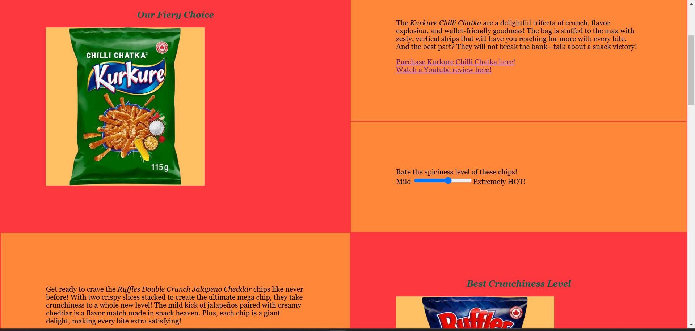

Comp 2511 Web I:Client Development
Website Building
This was a group project where my partner and I were tasked with creating a website from scratch about chips. The goal was to demonstrate our understanding of HTML and CSS. We first started the project by sketching out a layout and deciding on the content we wanted to include. It was a difficult but fun project to work on.
Here is a link to the project we worked on together: Chips Quest
Development Process
During the development process, I encountered several challenges, particularly with responsive design. Initially, my website did not display well on mobile devices. After researching CSS media queries, I was able to implement a responsive layout that improved the user experience. I also learned the importance of validating my HTML and CSS to avoid errors.
Reflection
This project taught me valuable lessons about web design and development. I realized the importance of user experience and accessibility. Overall, I felt a sense of accomplishment upon completing the project, and it motivated me to continue improving my skills in web development.
Social Innovation Project

For this project, I was tasked with creating a Google Site focused on social innovation. The goal was to explore how innovative ideas can address social issues and create positive change in communities. I researched various social innovation initiatives and compiled information on successful projects that have made a difference.
Development Process
During the development of the Google Site, I faced challenges in organizing the content effectively. Initially, I struggled with how to present the information in a way that was engaging and easy to navigate. After receiving feedback from my professor, I decided to use a more visual approach, incorporating images and videos to illustrate key points. This experience taught me the importance of social innovation.